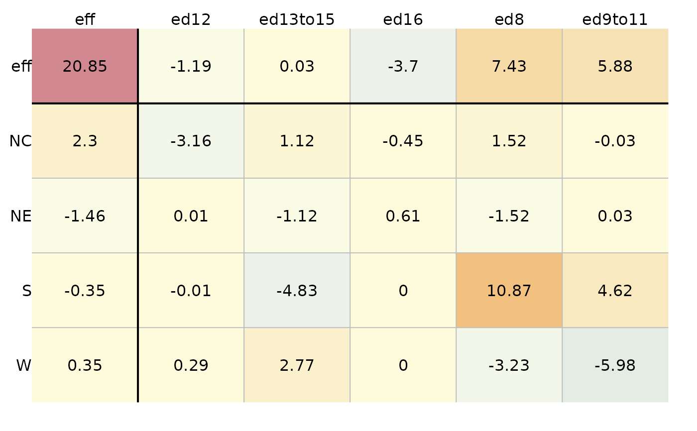

eda_pol Polishes two-way tables using median, means, or
any customizable functions.
Usage
eda_pol(
x,
row = NULL,
col = NULL,
val = NULL,
stat = median,
plot = TRUE,
eps = 0.01,
maxiter = 5,
sort = FALSE,
p = 1,
tukey = FALSE,
offset = 1e-05,
col.quant = FALSE,
colpal = "RdYlBu",
adj.mar = TRUE,
res.size = 1,
row.size = 1,
col.size = 1,
res.txt = TRUE,
label.txt = TRUE
)Arguments
- x
A three column data frame
- row
Name of column assigned to the row effect
- col
Name of column assigned to the column effect
- val
Name of column assigned to the response variable
- stat
Polishing statistic (default is median)
- plot
Boolean determining if an output plot should be generated
- eps
Convergence tolerance parameter
- maxiter
Maximum number of iterations
- sort
Boolean determining if the effects row/columns should be sorted
- p
Re-expression power parameter
- tukey
Boolean determining if Tukey's power transformation should used. If FALSE, the Box-Cox transformation is adopted.
- offset
Offset to add to values if at leat one value is 0 and the power is negative
- col.quant
Boolean determining if a quantile classification scheme should be used
- colpal
Color palette to adopt
- adj.mar
Boolean determining if margin width needs to accomodate labels
- res.size
Size of residual values in plot [0-1]
- row.size
Size of row effect values in plot [0-1]
- col.size
Size of column effect values in plot [0-1]
- res.txt
Boolean determining if values should be added to plot
- label.txt
Boolean determining if margin and column labels should be plotted
Value
A list of class eda_polish with the following named
components:
longThe median polish residuals with three columns: Column levels, row levels and residual values.wideThe median polish residuals table in wide form.rowRow effects tablecolColumn effects tableglobalOverall value (common value)iterNumber of iterations before polish stabilizes.cvTable of residuals, row effects, column effects and CV values in long form.powerTransformation power applied to values prior to polishing.IQ_rowRatio between interquartile row effect values and 80th quantile of residuals.IQ_colRatio between interquartile column effect values and 80th quantile of residuals.
Details
The function performs a polish on a two way table. By default, it
applies a median polish, but other statistical summaries such
as the mean can be passed to the function via the stat = argument.
The function returns a list of row/column effects along with global and
residual values. It will also generate a colored table if plot =
TRUE.
Examples
df <- data.frame(region = rep( c("NE", "NC", "S", "W"), each = 5),
edu = rep( c("ed8", "ed9to11", "ed12", "ed13to15", "ed16"), 4),
perc = c(25.3, 25.3, 18.2, 18.3, 16.3, 32.1, 29, 18.8,
24.3, 19, 38.8, 31, 19.3, 15.7, 16.8, 25.4, 21.1, 20.3, 24, 17.5))
M <- eda_pol(df, row = region, col = edu, val = perc, plot = FALSE)
plot(M)
